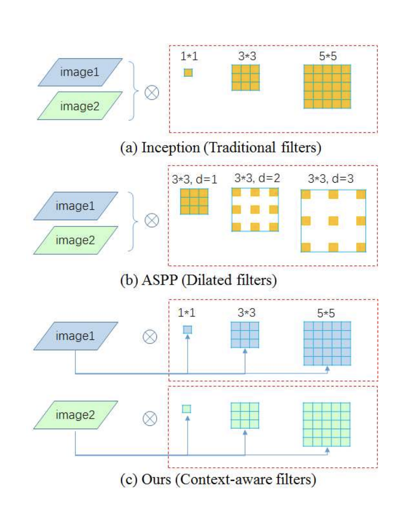
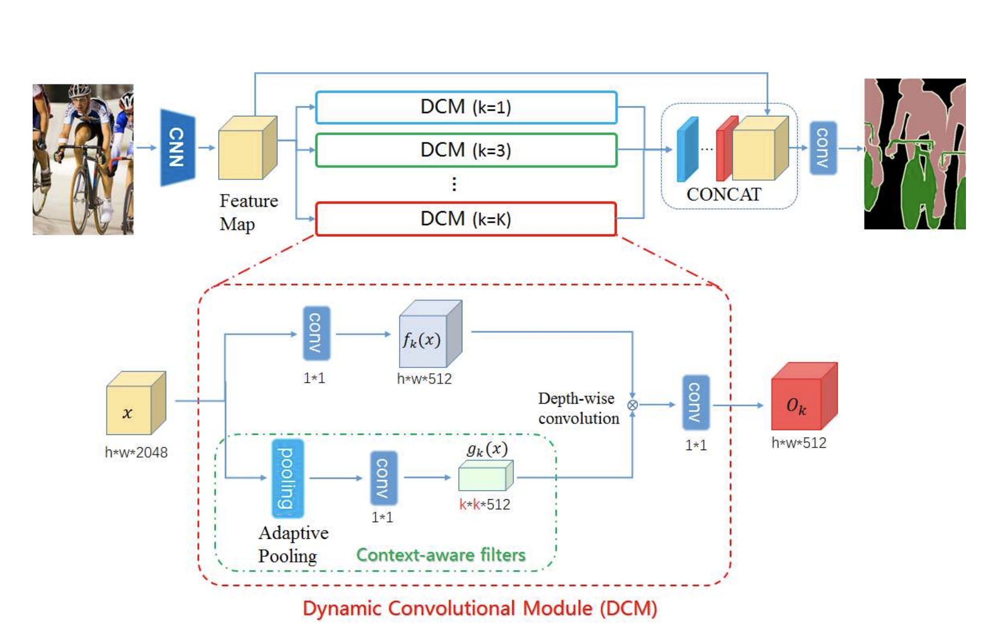
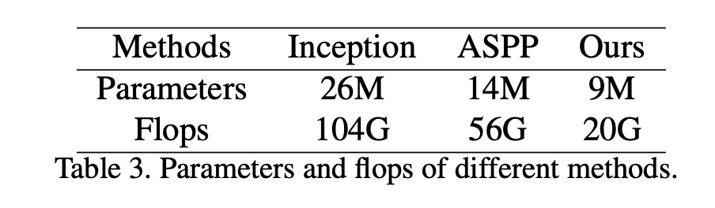

论文链接 ICCV 2019
这篇文章就是之前提到的动态卷积网络（dynamic filter network）的实际应用了，如果不了解动态卷积是什么的话，最好先去看看这篇文章（名字就叫dynamic filter network，目前300+引用）。
这篇文章的核心就在于提出了一种新的多尺度特征融合方式。文中列举并对比了四种多尺度融合方式，不过在示意图中只给出了三种，如下图所示：

前两种非常有名，分别是inception网络中使用的多尺寸卷积核、空洞卷积。加上图中没有画出来的空间金字塔池化，文中分别指出了以下问题：
- Inception Block: 大卷积核会显著提高模型体积及降低运行速度，以及随之而来的提高过拟合风险；
- Pyramid Pooling Module: 空间金字塔池化会丢失部分空间信息，导致特征图细节模糊；
- Atrous Spatial Pyramid Pooling：难以确定合适的膨胀率（对输入图像尺寸敏感），以及临近像素信息的丢失，导致知名的gridding artifacts。
同时，以上三种模型难以动态的适应输入图像，也就是说模型所用的参数在推断阶段是固定的。
下面当然就要开始说文中提出的新模型的优点了：自动适应输入图像，并且参数量和运行时间均明显减少。

模型的整体框架和其他多尺度特征提取方式基本一致（多尺度特征加残差连接），因此只关注具体提取方法就行了。
就像dynamic filter network原文中提到的一样，图中每个DCM有两个分支，上方的分支就是降低通道数后的特征图，下方就是filter generating network。经过adaptive pooling后，通过卷积就得到了context-aware的卷积核，尺寸k为不同的奇数，每个DCM不同，以实现多尺度特征提取。每个生成的filter和上方分支的特征卷积后就得到了该DCM的输出。需要注意的是这里的卷积是depthwise convolution。其他部分并没有在dynamic filter network的基础上做什么太多的改变。
文中在3.3 Discussion部分又进行了该模块与其他多尺度特征提取模块的对比，不过和Introduction中提到的差不多。为证实模块的效果，Experiments部分列举了挺多实验结果和数据对比，其中最显著的就是模块体积和运行时间的减小，且同时不会对评估结果产生明显影响。

这个模块的实际效果我还没试过，不过据实验室的学长说还是挺好的，等有时间了我去做实验测试一下（不急不急，下次一定。。。）